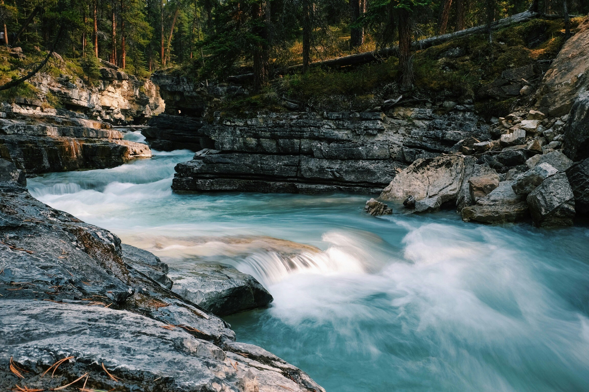

River Tours
Experience the thrill of rafting on our exciting river tours! Whether you're a first-time adventurer or a seasoned pro, we offer a range of rafting options to suit every level of experience.
Rivers
Experience the thrill of rafting on our exciting river tours!
Whether you're a first-time adventurer or a seasoned pro, we offer a range of rafting options to suit every level of experience.
Choose from gentle, scenic floats or adrenaline-pumping rapids for an unforgettable adventure.
Our expert guides will ensure your safety while providing insights into the natural surroundings and local wildlife.
With half-day, full-day, and multi-day options available, you can tailor your river experience to your preferences.
Grab your paddle and get ready for the ultimate rafting adventure!